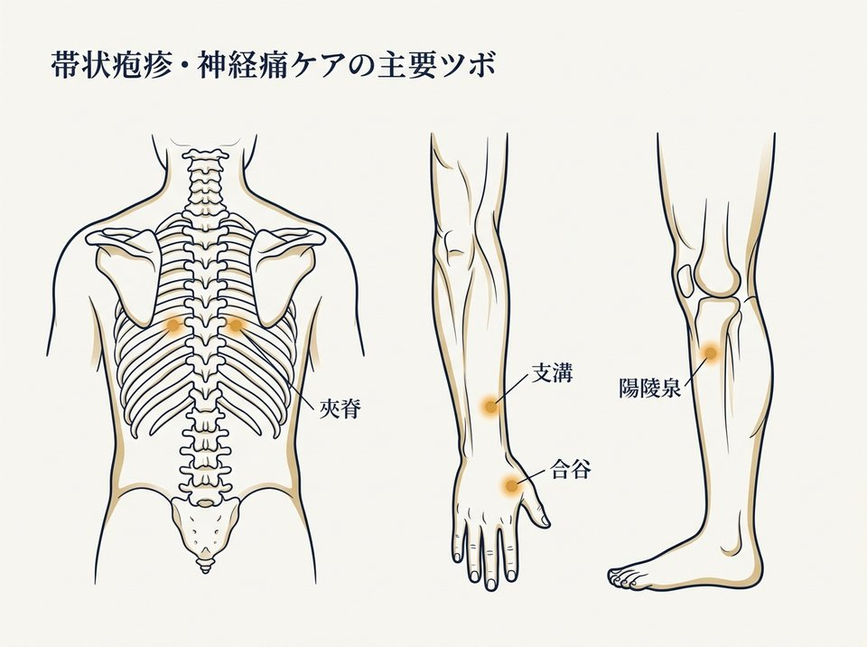

無毛症の鍼灸
本来毛が生えるべき部位に先天的要因などで毛が全く生えない状態で、専門医での評価とウィッグ等の対症ケア、心身・頭皮環境の調整が大切です。


院長YouTube解説・関連動画
無毛症の症状は毛があるべき場所が完全に毛がない状態になること
無毛症の症状は、本当であれば毛があるべき場所が完全に毛がない状態になることです。生まれた時から毛髪がない場合も生まれた時は毛が生えた状態でも時間が経つにつれて毛がない状態になる場合もあります。
毛がない状態になる部分は毛髪だけの場合も全身の毛の場合もあります。無毛症は原因によって症状の現れ方や経過に非常に大きく差があります。
無毛症、すなわち毛髪の喪失は、見た目上の影響だけでなく、個人の自己意識や自尊心にも影響を及ぼす可能性がある深刻な状況です。そして、無毛症の症状は様々で、発生する原因や種類によっても異なります。本ブログでは、無毛症の主要な症状とその特徴を深く掘り下げていきます。
部分的な脱毛: 一部の無毛症では、特定の部位のみで毛髪の喪失が見られます。これには、男性型脱毛症や女性型脱毛症で見られる頭頂部や前頭部の脱毛、円形脱毛症で見られる部分的なスポット状の脱毛などが含まれます。
全頭部または全身の脱毛: 全頭部の毛髪喪失は全頭部脱毛症、全身の毛髪（頭髪、まつ毛、眉毛、ひげ、体毛）喪失は全身脱毛症と呼ばれます。これらは主に自己免疫に関する病気の一部であり、体の免疫システムが誤って毛髪を攻撃する結果として発生します。
徐々に薄くなる毛髪: 一部の無毛症では、毛髪が突然落ちるのではなく、徐々に薄くなっていくことが特徴です。これは特に男性型脱毛症や女性型脱毛症でよく見られます。このタイプの無毛症では、脱毛が進行するにつれて毛髪の本数が減少し、毛髪の太さが細くなり、毛髪の成長速度が遅くなります。
急激な脱毛: ストレス関連の無毛症（テロゲン脱毛症）や抗がん剤や放射線後の無毛症では、急激な毛髪の喪失が特徴となります。特に、テロゲン脱毛症では、大量の毛髪が一度に落ちることで、髪全体が薄くなるか、部分的な脱毛が見られます。このタイプの無毛症はしばしば、重大な身体的ストレスや精神的ストレスの後に発生します。
爪の異常: 一部の無毛症、特に重症の円形脱毛症や全身脱毛症では、爪に白い斑点や溝、凹みなどの異常が見られることがあります。これは毛髪と爪が同じタイプのケラチンというタンパク質で構成されており、同じ生産過程を共有しているためです。
以上が無毛症の主要な症状とその特徴です。無毛症の症状は、その原因や種類により大きく異なります。
無毛症の改善方法は、基本的に現れている症状に対処することです。そのため、かつらを使うことなどが主な改善方法です。
毛に関係している症状が現れる原因にはいまだに明らかになっていないことが多いです。そのため、判断や改善を行う方法も確立はされていません。
これから判断や改善を行う方法についての研究が進んでいくことが期待されています。
薬: 様々な種類の薬が無毛症の改善に使用されます。これには、毛髪の成長を刺激するミノキシジル、男性ホルモンの作用を阻害するフィナステリド、免疫系の反応を抑制するステロイド、自己免疫反応を抑制する免疫抑制薬などがあります。
光線: 光線は、特に重症の円形脱毛症や全身脱毛症の改善に有効であることが示されています。この方法は、皮膚に特定の波長の光を当てることで、毛髪の成長を促進し、免疫系の反応を抑制します。
ヘアトランスプラント: ヘアトランスプラントは、主に男性型脱毛症の改善に使用されます。この手術では、頭部の毛髪の豊富な部分から毛髪の株を取り、脱毛した部位に移植します。
スカルプリダクション: スカルプリダクションは、脱毛が進行した頭皮の部分を外科的に除去し、毛髪のある頭皮でその部分を覆う手術です。この手術は、主に男性型脱毛症の重症に対して行われます。
心理的なサポート:無毛症は見た目に影響を及ぼすため、自尊心や自己像にも影響を与える可能性があります。そのため、心理的なサポートは無毛症の管理の重要な部分となります。カウンセリングやセラピー、サポートグループへの参加は、無毛症によって引き起こされるストレスや不安を軽減するのに役立ちます。
ヘアリプレイスメント: 一部では、ウィッグ、ヘアピース、スカーフなどのヘアリプレイスメントを選ぶことを好みます。これらは一時的な解決策であり、自分自身を自信を持って表現するのを助けることができます。
無毛症の改善は、症状の重症度、原因、ライフスタイル、個々の選択などに基づいて個別に調整する必要があります。
無毛症と非常に似ている症状が現れるものに乏毛症があります。乏毛症の原因も遺伝的なものです。症状は、生まれた時から髪の毛が少なく縮れた状態になることです。
乏毛症は非常に珍しい病気です。改善方法はいまだに確立されておらず、ずっと乏毛症に悩まされることになります。
無毛症に効果的なツボ
和髎はもみあげの近くにあり、眼精疲労に効果的なツボです。そのため、目が霞んでいたり疲れていたりするときに刺激をすることがおすすめです。
頭痛や肩こりなどにも効果的で、頭皮にあることから刺激をすることで育毛の効果も期待できます。
天柱は自律神経を整える効果があります。頭痛や肩こり、眼精疲労などの症状を和らげるためにおすすめのツボです。
天柱は頭皮にあるツボのため、育毛にも効果的であると言われています。頭皮にあることと、自律神経を整えることから無毛症の改善にも効果が期待できます。
風池は、首筋から肩の血流をよくする効果があります。そのため、頭痛や眼精疲労、肩こり、背中の痛みなどに効果的です。
後頭部にあるツボであり、血流をよくすることから育毛にも効果が期待できます。特に円形脱毛症や後頭部の抜け毛に効果的であるとされています。
▼ 詳しく知りたい項目だけタップして開けます（全項目の医学解説を収録）
01. 原因とメカニズム
なぜ症状が起きるのか・鍼灸の作用機序を読む
▼
01. 原因とメカニズム
なぜ症状が起きるのか・鍼灸の作用機序を読む
先天性無毛症はHR遺伝子などの遺伝子異常により生まれつき毛が生えない状態で、類似の乏毛症も遺伝的要因で起こります。また広義の無毛状態には、自己免疫反応（全頭型・汎発型円形脱毛症）、ホルモン変動、栄養不足、強いストレス、抗がん剤等の影響による後天的な脱毛も含まれ、原因に応じた専門医での見極めが重要です。
なぜ鍼灸で改善へ向かうのか？（作用機序の図解）
無毛症に対する鍼灸は、神経性炎症・掻痒（かゆみ）伝達と自律神経の鎮静機序を通じて、お体本来の回復力を引き出します。
湿疹・傷口への直接刺激を避け、曲池・血海・築賓・三陰交など全身の調整穴へアプローチします。
痒み感覚を伝える神経経路の過敏性を鎮め、「かゆい→掻く→悪化」の悪循環を断ちます。
交感神経の過緊張や夜間覚醒を和らげ、皮膚の修復が進みやすい血流と睡眠環境を整えます。
標準の保湿・外用・内服治療と協調し、ストレスや季節変化で悪化しにくい土台を支えます。
02. よくあるお悩み
このような症状はありませんか？（4項目）
▼
02. よくあるお悩み
このような症状はありませんか？（4項目）
- ✓生まれつき毛が生えるべき部位に毛が全く生えてこない、または生えていた毛が抜けた
- ✓頭部のみ、あるいは眉毛・まつ毛を含む全身に毛がない状態が続いている
- ✓類似する乏毛症や自己免疫性脱毛症との違い・原因を正確に知りたい
- ✓見た目の変化に伴うストレスや首肩の緊張、疲労感を和らげたい
03. 当院の施術アプローチ
施術の進め方・改善のポイントを見る
▼
03. 当院の施術アプローチ
施術の進め方・改善のポイントを見る
04. ツボ詳細・セルフケア一覧
皮膚・アレルギー・帯状疱疹・脱毛症の全身ツボ図解（6穴）
▼
04. ツボ詳細・セルフケア一覧
皮膚・アレルギー・帯状疱疹・脱毛症の全身ツボ図解（6穴）
実際の施術ではお一人おひとりの体質・症状に合わせて選穴しますが、アトピー性皮膚炎・慢性蕁麻疹・帯状疱疹痛・円形脱毛症の全身調整の臨床でよく用いられる代表的なツボの目安です。
| ツボ名 | 位置の目安 | 主な狙い | セルフケアの注意点 |
|---|---|---|---|
| 百会（ひゃくえ） | 頭頂部の中央 | 頭皮の微小循環（円形脱毛症等）とストレス性のかゆみ鎮静 | 皮膚に炎症や傷がある部位は避けて施術します。 |
| 曲池（きょくち） | 肘を曲げた外側のシワの先端 | アトピー・蕁麻疹のかゆみ（掻痒感）軽減の最重要穴 | 皮膚科の標準外用薬・内服薬と併用して行います。 |
| 合谷（ごうこく） | 手の甲、親指と人差し指の間 | 帯状疱疹痛の鎮痛補助・皮膚バリアの自律神経調整 | 帯状疱疹は発症早期の抗ウイルス薬内服が最優先です。 |
| 血海（けっかい） | 膝のお皿の内上角から指3本分上 | かゆみ・赤み・蕁麻疹の血流バランス調整 | 曲池と組み合わせる「曲池・血海」は皮膚ケアの定番です。 |
| 足三里（あしさんり） | 膝の下外側、指4本分下 | 腸管免疫と皮膚の回復力サポート | 慢性的な皮膚トラブルの体質づくりに用います。 |
| 三陰交（さんいんこう） | 内くるぶしの上から指4本分上 | 夜間のかゆみによる睡眠障害・乾燥肌の巡り改善 | 掻き壊しのある皮膚は避け清潔を保ってケアします。 |
05. 医学的根拠・国際査読論文（PubMed / Cochrane）
科学的エビデンス・出典リンク一覧（3件）
▼
05. 医学的根拠・国際査読論文（PubMed / Cochrane）
科学的エビデンス・出典リンク一覧（3件）
国際的な医学データベース（PubMed・Cochrane等）で報告されているアトピー性皮膚炎・湿疹・かゆみ領域の代表的な査読済み鍼灸研究をまとめています（標準治療との併用や研究上の限界を含めて正確に掲載）。
| 年・研究デザイン | 対象・規模 | 主な結果 | 限界・出典 |
|---|---|---|---|
| 2024年 メタ解析 | アトピー性皮膚炎 8 RCTs（n=463） | EASI重症度スコアおよび掻痒VASの軽減傾向を報告。 | 小規模試験が中心で皮膚科外用治療との併用が基本。 BMJ Open (PMID: 39638592) |
| 2021年 シャム対照RCT | 軽〜中等症アトピー性皮膚炎 36名（韓国） | SCORADスコアおよびかゆみ指標がシャム鍼比で有意に低下。 | 症例数が少なく長期追跡が必要。 BMC Complement Med Ther (PMID: 33926433) |
| 2023年 メタ解析 | 難治性掻痒 7 RCTs（n=504） | かゆみ強度スコアの軽減を示唆。 | 基礎疾患の管理が最優先。 J Pain Symptom Manage (PMID: 36055470) |
参考文献・出典
- 2024年 メタ解析（アトピー性皮膚炎 8 RCTs（n=463））— BMJ Open (PMID: 39638592)
- 2021年 シャム対照RCT（軽〜中等症アトピー性皮膚炎 36名（韓国））— BMC Complement Med Ther (PMID: 33926433)
- 2023年 メタ解析（難治性掻痒 7 RCTs（n=504））— J Pain Symptom Manage (PMID: 36055470)
06. よくある質問（FAQ）
よくあるご質問を見る（2件）
▼
06. よくある質問（FAQ）
よくあるご質問を見る（2件）
Q. 無毛症と脱毛症はどう違うのですか？
一般に無毛症は生まれつき毛が生えてこない先天的な状態を指し、一度生えた毛が後から抜けて少なくなる後天的な状態は脱毛症と呼ばれます。原因によって対応が大きく異なるため、まずは皮膚科専門医での正確な診断が大切です。
Q. 鍼灸ではどのようなサポートが受けられますか？
先天的な遺伝子要因そのものを変えることはできませんが、和髎・天柱・風池などのツボで頭皮や首肩の血流と自律神経を整え、ストレス緩和や体調管理の面から継続的にサポートします。
あわせて読まれる関連疾患（皮膚のお悩み）
通常の日光照射でも露出部に赤み・腫れ・水ぶくれ・強いかゆみが起きる日光アレルギーです。紫外線対策と皮膚科診療を基本に自律神経を整えます。
暑い環境や運動時でも発汗量が正常より少なく、皮膚の乾燥や体温調節の乱れ・熱中症リスクを伴う状態です。
体温調節に必要な量以上の汗を大量にかき、手足や全身の発汗が日常生活の支障となる状態です。
前兆なく突然コイン状に毛が抜ける自己免疫関連の脱毛症で、皮膚科での専門治療を基本に自律神経・頭皮血流・ストレスケアが大切です。
成長途中の髪が抜ける異常脱毛で、ストレスや血流不足、ホルモン変化が関わり、自律神経と頭皮環境・生活習慣を整えることが重要です。
表皮のメラノサイトが減少・機能停止し皮膚の一部が白く抜ける疾患で、皮膚科での鑑別・標準治療と心身のストレス管理が大切です。
CLINICAL RECOVERY CASES
✨ 実際の臨床改善事例・回復経過を見る
銀座本院をはじめ各院での実際の改善事例を症状別に絞り込んでご確認いただけます。
おひとりで悩まず、まずはご相談ください
銀座本院・川口・大宮・横浜・博多・田無の各院でご予約を承っております。